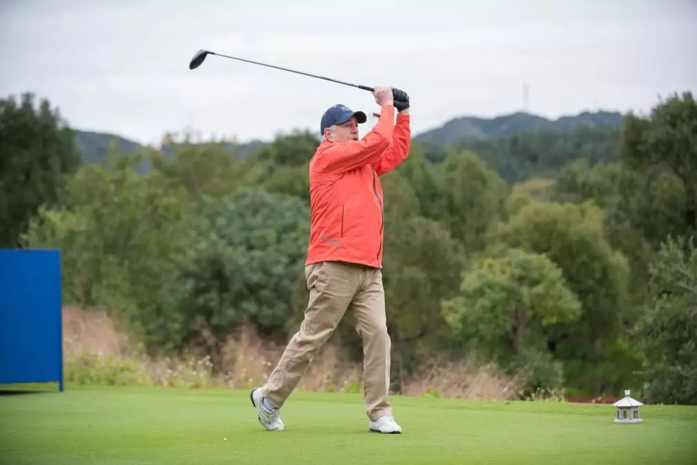

想不到！成功企业家的别墅，竟是这样运营的！
盛夏已经来临。
这时节的国际名流们往往都集中在一个去处：庄园别墅。
在美国，风光秀丽的安纳伯格庄园被称为 “外交庄园”，七位美国总统曾在这里上演了历史上十分重要的戏码。
“阳光之乡” 安纳伯格庄园
英国的王室更是热衷于在各处庄园别墅中度假，享受不被外界打扰的静谧时光。
图中这座巴尔莫勒尔庄园位于阿伯丁郡，是英国女王伊丽莎白二世的避暑行宫。女王每年的 8 月到 10 月都会住在这里，接见王室成员，同时举行狩猎、徒步、野餐烧烤等各项饶有趣味的庄园活动。
除了政要，国际名流也十分中意庄园别墅。
美国知名的脱口秀主持人奥普拉 · 温弗瑞就曾在奥卡斯岛买下一处庄园。
这个庄园占地面积达到惊人的 17 万㎡，拥有的私人海滩长度更长达 1000 米。
而在中国内地，庄园别墅的风潮方兴未艾。
在两年前入手侨鑫 · 汇悦台的陈先生，正在广州物色一处别墅。
陈先生是靠互联网行业起家的 80 后。
“对我而言，现在做生意已经不是为了赚钱，而是因为我热爱这项事业，它就像是一门艺术，让我乐在其中。”
陈先生说，他最近刚刚收购了一个产业链相关的文创企业，整个谈判的过程让他感到兴奋。
目前，陈先生一家人居住在侨鑫 · 汇悦台的房子中。
在不少人看来，居住在侨鑫 · 汇悦台的陈先生，已经算是人生赢家。但在陈先生看来，他还缺少一套别墅。
一方面，别墅可以满足陈先生一家人周末的度假需求；另一方面，一套风景优美的别墅，也能招待陈先生的一些重要朋友。
毕竟，社交是陈先生生活中必不可少的组成部分，如果将客人领回家里，难免会对家人造成一些影响，也显得格局不够。
在这样的前提下，一套别墅的存在，就显得十分有必要。
对陈先生来说，预算不成问题，但寻找理想中别墅的过程并不顺利。
“看了一些二手别墅，包括二沙岛和珠江别墅，整体比较陈旧。有的项目前期交付的别墅都空着，门前长满了杂草，没有装修；有些装修是很多年前的，栅栏都生锈了，游泳池是干的，一看也是很多年没有人来；有的别墅门前院子里在养鸡种菜，感觉就像在乡下……” 看了一圈，陈先生有些失望。
新入市的别墅也看了不少，但总体感觉没有独特的资源，更重要的是，后期没有运营管理。
“如果别墅生活是这样的，我宁可不要。” 陈先生说。
前几天，一个偶然的机会，陈先生听人说起被克林顿誉为 “广州安纳伯格庄园” 的从都国际庄园。
说到庄园，陈先生觉得很新鲜而又遥远，它几乎是国际政要社交场所的代名词，又让人想起《唐顿庄园》中美伦美奂的贵族生活场景。
好奇之下，陈先生去参观了一下。
这是从都的高尔夫球场，远处山头云雾缭绕，配着近处的中式建筑与球场，像是一幅中西结合的画作。
从都的高尔夫球场，是全球罕见拥有全果岭草、贵宾专属发球别墅的球场，而且是由 “欧洲之王” 科林 · 蒙哥马利主笔设计的。
整个球道走势浑然天成，结合起伏的丘陵、延绵的山谷与蜿蜒的溪流，满足不同难度的挑战。
在这样的球场里，与三五好友相约，一边打球一边欣赏美景，颇有偷得浮生半日闲的感觉。
如果说高尔夫球场并不罕见，那么马场就很难得了。
从都的隔壁就是香港赛马会从化马场，是内地首个世界级马场和纯血马匹训练中心，是唯一具备举办国际马术比赛条件的马场类综合体。
陈先生平时喜欢赛马，一双儿女也受父亲的感染，早已开始接触相关的活动。所以，从都的这个优势让他十分心动。
而让人更感到安心的是，这里有国际一流的健康管理中心。
右二德国内分泌学和内科医学博士、自然疗法和衰老学专家 Prof. Dr. Elke Seebach，右一从都国际生命健康管理中心执行院长 Dr. Helmut Schwesig
从都的生命健康管理中心是世界一流的预防医学中心。不用出国门，就能享受世界级专业团队提供的个性化医疗方案和健康管理服务，这个在华南区域都是比较少见的。
比起其它项目，陈先生最看重的是一年一度的从都国际论坛。论坛如今已经是五个年头了，之前有 70 多个国家、100 多位世界前政要出席。而从都的业主一般也会受邀出席论坛，在论坛期间，与各国前政要一起挥杆高尔夫，可以说这种庄园社交活动带来的圈层是世界顶级的，也是一般别墅无法提供的。
2018 年 12 月 9 日，哥伦比亚前总统安德烈斯 · 帕斯特拉纳挥杆从都。
说到产品本身，亮点也颇多。
看过很多别墅，陈先生觉得，从都国际庄园的温泉别墅可以称得上 “最美的庄园别墅”。
如果以 300 平同等的面积段比较，从都庄园温泉别墅的容积率只有 0.2，面宽更是去到 30 米，层高 4.2 米，每户 8-10 个庭院花园更是大到超乎想象，还带氡温泉入户。“300 多平看起来像 800 平” 陈先生感叹道。
从都的独特资源让陈先生很心动。
但是朋友给他浇了一盆冷水。陈先生的另一位企业家朋友在郊区买了别墅，交楼 5 年了，现在他还没有时间去搞装修，买了以后就空在那里，每个月交着上万的管理费，却没法使用，那种感觉就像是在额外交一笔税。
陈先生觉得，他理想中的别墅，应该是三分建七分养，管理运营很重要。
对于陈先生这种新型企业家来说，他更愿意将购买固定资产这件事，视为一种投资。
而创业经验告诉陈先生，投资最重要的点在于，合理分配与利用资源。
“当然，我并不指望着别墅能给我赚多少钱，而是我更希望，它能够发挥真正的价值。而不是像一件‘大玩具’，兴起的时候去住几天，过后就任由它堆灰，这对于我来说，就是一种资源浪费。”
所以，当他了解到从都庄园温泉别墅的运营模式以后，他觉得自己终于找到了理想中的别墅。
从都庄园温泉别墅目前推出了一个托管计划，根据业主的需求可选择全托管与轻托管的运营方式。
相比酒店管家式的轻托管方式，陈先生觉得全托管方式更适合他的需求。
从都庄园温泉别墅都是精装交楼、配齐家私家电，免去了陈先生装修的烦恼。
而且全托管期内，他还有 60 天的免费入住权益，无需承担物业管理费。至于健康检查、高尔夫球权益更是额外的福利。
让他放心的是，为业主提供托管运营的就是从都的酒店。
从都酒店的管理团队经过了数次从都国际论坛接待任务的历练，有接待元首和国宾的丰富经验。
庄园内更有一支 800 人的服务团队，经过法国皇室管家学院培训，提供 24 小时全天候服务。全部由退伍军人、人数达到一个连的编制的专业安防队伍，和元首级的安防设施更让陈先生觉得放心。
陈太说，“我觉得把我会所里的一些活动挪到这里举办，应该不错。”
“我也想好了，今年 39 岁的生日晚宴就在从都办。我会把朋友们从机场接来，用马拉进庄园，在别墅里办一个大型派对，肯定特别棒。” 陈先生有一点兴奋。
一旁的陈太笑了，她说，“我好久没看见他脸上这种孩子一样的笑容。”
最好的建筑是这样的，我们深处在其中，却不知道自然在哪里终了，艺术在哪里开始，在品阅众多风格迥异的建筑之后，也只有庄园才能诠释这其中的真谛。——林语堂
陈先生觉得，这句话大概最能诠释他当下的感受。
文章来源:广州PLUS